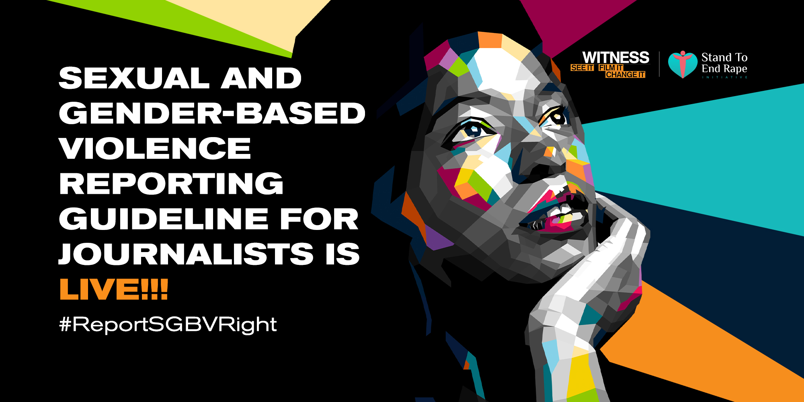
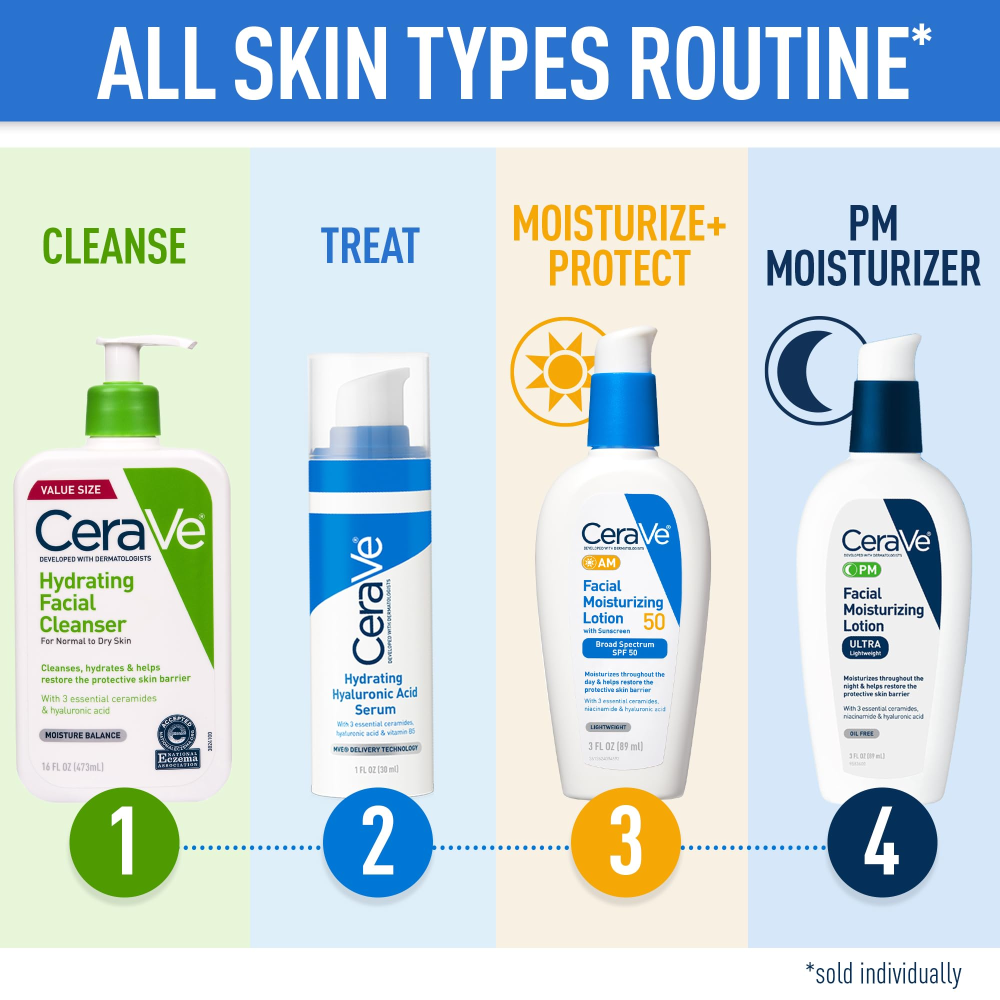

I am a dedicated Technical Communicator with a strong background in technical writing, user-focused communication, and research. I aim to bridge the gap between complex information and accessibility. My expertise includes creating technical reports, research papers, and web content. This portfolio is designed for prospective employers and academic peers who seek a professional with proven skills in technical communication. More information about my expertise, skills, and experience can be found inmy CV


Context: This research article explores the #ArewaMeToo movement, analyzing its role in addressing gender-based violence through social media. The study uses Social Network Analysis (SNA) and Inductive Coding to uncover patterns of digital activism.
My Role: I carried out the research, performed data analysis using NodeXL, and authored the manuscript synthesizing theoretical and practical insights.
Impact: The study contributed to understanding the effectiveness of digital activism, providing actionable insights for online advocacy campaigns and advancing academic discourse on gender-based violence.
Read More Context: This report evaluates effective teaching practices in technical communication and computer science undergraduate courses. The analysis focuses on engagement, collaboration, and instructional relevance.
My Role: I conducted structured classroom observations, documented teaching methodologies, and compiled findings into a detailed report.
Impact: The report provided actionable recommendations for course improvement, demonstrating my analytical skills and ability to assess pedagogical effectiveness.
Read MoreContext: Designed a professional website for CeraVe, focusing on user experience and brand communication. The site highlights the company’s mission and product offerings.
My Role: I designed and developed the website structure, designed visuals and navigation, and ensured accessibility and clarity of content.
Impact: This website enhanced brand representation through a user-friendly digital platform, improving user engagement and satisfaction.
Click Website 